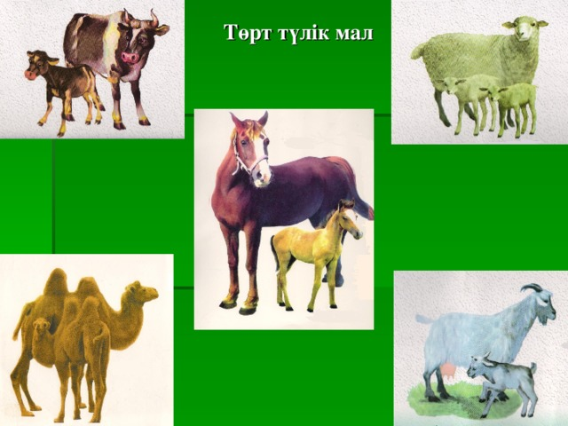
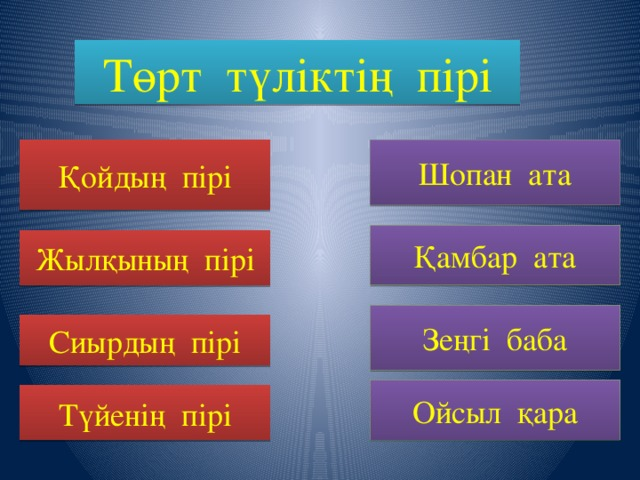
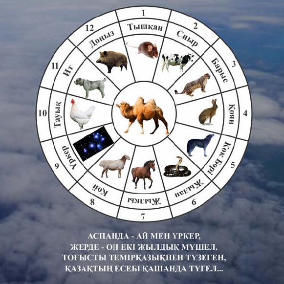

Төрт түлік
Төрт түлік малдың ішіндегі ең қасиеттісі түйе болып есептелген. Ол қырық күн шөлге шыдамды, жүк артса – көлік, жесе – ет, ал жүні киімге жараған. Қазақтар түйенің жүнінен түйе жүн шекпендер киген, ол жеңіл әрі жұмсақ сырт киім болған. Түйенің күштілігі, жүйріктігі, шыдамдылығы сияқты түрлі қасиеттері бар, соған орай оны түрліше атайды (желмая, нар, аруана, жампоз, үлек, нарқоспақ т.б.). Асанқайғының шапқанда құстай ұшатын желмаясы естеріңізде болар. Ал түйе өзінің өсу жолында бота, тайлақ, буыршын, буырлыш, науша, бұзбаша, інген, атан, бура деп аталады.
Қазақтың қасиетті малдарының бірі – жылқы. Оны құлын, жабағы, тай, құнан, байтал, дөнен, бесті, бие, ат, сәурік (суйрік), айғыр деп атайды. Ал оның жүйріктігіне, тағы да басқа қасиеттеріне қарай әсіресе батырлар жырларында жорға, сужорға, жүйрік, тұлпар, қазанат, сәйгүлік, дүлдүл арғымақ деп атаған. Жылқы малын аса жоғары бағалаған қазақтар оны үлкен ас-тойларда жарысқа салып, бас бәйгесіне мол дүние беретін болған. Ер азаматтарға жасалатын сыйдың да үлкені ат мінгізіп, шапан жабу болған.
Жылқының жүрісіне дейін атаулары болған. Мысалы, аяң жүріс, жорға жүріс, жортақ жүріс, бүлкек желіс, бөкен желіс, шоқыта жүру, шабыс. Оның түсі де әртүрлі теңеулермен сипатталған: торы, күрең, жирен, ақбоз, боз, көк, шұбар т.б.
Сиыр малы момақан, қазақтар үшін көбінесе тамаққа жараған, ет, сүт, айран, қаймақ, май, құрт, ірімшік т.б. осы сиырдың берген берекесі болған. Сиырды кейде көшке де, егіске де пайдаланып отырған. Жалпы, қазақтар сиырды киімге жаратпаған, қонаққа сыйға тартпаған, тіпті түске кірсе де ауыртпалық деп жорыған, тіпті қазақта епетейсіз, икемсіз әрі денелі адамды «сиырдай» деп, сөйлемейтін адамды «аузын буған өгіздей», «мыңқиған бұзау сияқты» деп мазақтайтын тіркестер қолданылады. Дегенмен, сиыр да үйдің берекесі, айран-сүттің көзі, балаларының асыраушысы ретінде қадірлі мал болған. Сиыры жоқ үй ас-ауқаты жұтаң үй болып есептелген. Сиырды жасына қарай бұзау, торпақ, тана, тайыншща, қашар, құнажын, дөнежін, сиыр, өгіз, бұқа деп атаған.
Түйе мен жылқыны, өгізді көлік ретінде пайдаланады, шанаға, арбаға, малға жегеді, салт та мінеді.
Қой – төрт түлік малдың ішіндегі қазақтың ең сүйіктісі десе де болады. «Қойдың сүті – қорғасын, қойды құртқан оңбасын» дейтін қазақтың қой өсіруге ынта-ықыласы мол-ақ. Өзі майда, өсімтал, момақан, тез ет алып, қонақ кәдеге жарап отыратын, сүті майлы әрі жұғымды қой малын ата-бабамыз ерекше қастерлеген. Қой өсу жасына орай қозы, марқа, тоқты, бағылан, тұсақ, азбан, ісек, қошқар, саулық деп аталады.
Ешкі де қазақтар үшін өсімтал малдың бірі болғандықтан, қадірлі. Ешкінің еті жеңіл әрі сіңімді, сүті аса құнарлы болады. Ешкінің сүттісін арнайы ұстап, ана сүтіне жарымаған баланы ешкі сүтімен асырайды. Ешкінің серкесін әрдайым қойдың отарына қосып отырады, оның бүкіл отарды бастап, жайылымға апарып, әкелетін қасиеті бар. Дегенмен ешкіні қонаққа соймайды. Ешкі жеңілтек мал деп есептеледі де, мінезі ұшқалақ, шыдамсыз баланы (әсіресе қыз баланы) «ешкі құсап селтеңдеп» деп, ешкіге теңеп отыратыны бар. Ешкіні жасына қарай лақ, туша, бөрте, шыбыш, серке деп бөледі.
Төрт түлік малдың өзі қадірлейтін басын қазақтар басқаға бермеген, онда жұтаңдық орнап қалады деп есептеген. Әрбір рудың өз малына салатын таңбасы болған. Оны олар малдың құлағына, мүйізіне, жамбасына салатын болған.
Еңбекқор қазақ халқы мал өнімдерін өте орынды пайдаланып отырған. Шаруашылықта қолданылатын заттар – жылқының жалынан, құйрығынан жасалатын арқан, сиыр мүйізінен жасалатын тарақ, қой жүнінен жасалатын киіз, текемет, тоқылған сырт киім, түйе жүнінен тоқылған шекпен т.б. аса жоғары бағаланған. Тіпті түйенің шудасын да, қайнатып, емге пайдаланған. Кедей қазақтар қойдың жабағы жүніне жаңа туған нәрестені де орап, қыстан аман алып шыққан. Осындай аса құнды мал болғандықтан, қазақтар өз перзенттерін де «құлыным, қозым, қошақаным, ботам» деп, айналып-үйірілген, еркелетіп отырған.



Қазақ халқында жыл санаудың негізіне мүшел алынады. Бір мүшел 12 жылдан тұрады. Жыл есебін бұлай жүргізу - ежелгі кезден басталған. Мүшелдік жыл санау - тышқан жылынан бастау алады.
Мүшелдегі жылдар 12 түрлі жануардың атымен аталады: 1 – тышқан, 2 – сиыр, 3 – барыс, 4 – қоян, 5 – ұлу, 6 – жылан, 7 – жылқы, 8 – қой, 9 – мешін, 10 – тауық, 11 – ит, 12 – доңыз жылы. Бұлардың алтауы – үй жануары, алтауы – түз тағысы.
Жыл аттары не себепті жануарлардың атымен аталатыны және жыл басы неге тышқаннан басталатыны туралы халық арасында аңыз-ертегі бар. 12 жылдық қайталама негізінде мүшелмен жыл есебін жүргізуді қазақ халқы «жыл қайыру» деп атайды.
Аңыз бойынша осы он екі жануар жыл атына ие болуға таласқан. Сонда тышқан тұрып: «Дауласатын дәнеңе жоқ, таңертең бәріміз шығып келе жатқан күнді аңдимыз. Сонда күннің көтеріліп келе жатқанын кім бірінші көрсе, сол - бірінші жылдың, одан кейін көргеніміз екінші жылдың атын аламыз. Осылай өз кезегімізбен барлық жылды бөліп аламыз», - деп ұсыныс жасаған.
Бұған келіскен жануарлар демалып жатқанда тышқан түйенің басына шығып алады. Осылайша ол күнді бәрінен бұрын көріп, жыл басы атанған. Түйе бойына сеніп, жылдан құр қалыпты деседі.
Түйені санаттан қалдырмайтын да аңыз бар. Аңыз бойынша, жануарлардың бәрі жиналып, түйенің мүшелерін бөлісіп алған. Шынында да, түйенің құлағы - тышқандікіндей, тұяғы - сиырдікіндей, кеудесі - барыстікіндей, ерні - қояндікіндей, мойны - жыландікіндей, шудасы - жылқының жалындай, жоны- қойдікіндей, бөксесі - мешіндікіндей, төбесі - тауықтікіндей, сандары - иттікіндей, құйрығы - доңыздікіндей емес пе?!